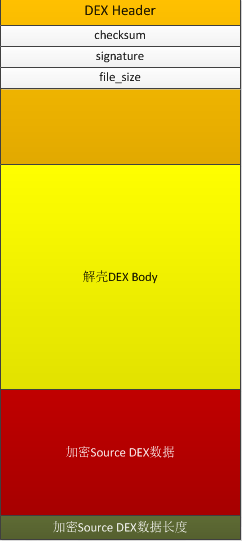

Author:wnagzihxa1n
E-Mail:wnagzihxa1n@gmail.com
本系列文章为个人学习知识总结笔记，文中所总结到的内容均会标明出处，本文会详解JiaZhiJun大牛在2013年发表的系列文章《Android APK加壳技术方案》，然后在此基础上进行靠近现代壳的扩展，比如将壳代码写进Native层，加入反调试，对核心代码进行混淆，再比如进行类抽取处理，SO文件区段破坏，自定义Loader等技术，希望和正在学习安卓加固技术的同学进行技术上的交流
JiaZhiJun大牛的两篇文章，大家可以仔细阅读，有些细节没有写出来，本文会将细节进行详细的讲解，并且完成实践
我们先按照文章中的思路来捋一遍，首先是一张示意图，该图来自JiaZhiJun大牛博客原文
如图所示，作者将加密后的Dex数据直接拷贝到了解壳Dex的后面，并且在最后面加上了加密后的Dex数据长度，其实还可以将加密后的Dex文件存储为一个单独的文件或者多个文件，壳运行时进行数据读取解密填充恢复等操作，大多数壳是按照后者的思路来加壳的

加壳程序工作流程：
1. 加密源程序APK文件为加密数据
2. 把加密数据写入壳APK的Dex文件末尾，并在文件尾部添加加密数据的大小
3. 修改壳程序Dex文件头中`checksum`、`signature`和`file_size`头信息
4. 使用源程序`AndroidMainfest.xml`文件并覆盖壳程序`AndroidMainfest.xml`文件
壳程序工作流程：
1. 读取Dex文件末尾数据获取加密数据长度
2. 从Dex文件读取加密数据，解密数据，以文件形式保存解密后的数据到`targetAPK.apk`文件
3. 通过`DexClassLoader`动态加载`targetAPK.apk`
首先我们得准备一个待加壳APK，加密后附加到壳的Dex文件后面，然后还要修改壳Dex的头部数据，签名，长度什么的，我这里选择一种稍微简单点的形式，直接将APK源文件放到assets文件夹，然后壳跑起来后，先读这个文件，再保存到某个私有文件夹，使用DexClassLoader去加载它，然后。。。。。。
大概是这样子，在准备阶段会稍微简单点。。。。。。偷一下懒应该是没事的。。。。。。
如果没有接触过写壳的同学或者对壳有一点了解但不清不楚的，有任何疑问，都请先看下去，我知道大家内心的疑惑，毕竟我实践的时候也各种问题，我相信大家心中想的我肯定也想了，我们放到后面慢慢解答，先来走一波最简单形式的壳
先创建一个SourceAPK，再创建一个ProtectAPK，先保证两者的开发环境一样，各种布局什么的都按照基础的来，版本选择4.4
SourceAPK的布局文件添加一个按钮和文本框，如下：
<?xml version="1.0" encoding="utf-8"?>
<RelativeLayout xmlns:android="http://schemas.android.com/apk/res/android"
xmlns:app="http://schemas.android.com/apk/res-auto"
xmlns:tools="http://schemas.android.com/tools"
android:layout_width="match_parent"
android:layout_height="match_parent"
tools:context="com.wnagzihxain.sourceapk.MainActivity">
<TextView
android:layout_width="match_parent"
android:layout_height="wrap_content"
android:layout_alignParentTop="true"
android:layout_centerHorizontal="true"
android:layout_marginTop="19dp"
android:text="Hello World!"
android:textAlignment="center"
android:textSize="24sp"
app:layout_constraintBottom_toBottomOf="parent"
app:layout_constraintLeft_toLeftOf="parent"
app:layout_constraintRight_toRightOf="parent"
app:layout_constraintTop_toTopOf="parent"
android:id="@+id/textView" />
<Button
android:id="@+id/button"
android:layout_width="match_parent"
android:layout_height="wrap_content"
android:layout_below="@+id/textView"
android:layout_centerHorizontal="true"
android:layout_marginTop="14dp"
android:background="@android:color/holo_blue_bright"
android:text="Click"
android:textAlignment="center"
android:textStyle="bold" />
</RelativeLayout>
在MainActivity里，写一下点击事件
package com.wnagzihxain.sourceapk;
import android.app.Activity;
import android.os.Bundle;
import android.view.View;
import android.widget.Button;
import android.widget.TextView;
import android.widget.Toast;
public class MainActivity extends Activity {
@Override
protected void onCreate(Bundle savedInstanceState) {
super.onCreate(savedInstanceState);
setContentView(R.layout.activity_main);
final TextView textView = (TextView) findViewById(R.id.textView);
final Button button = (Button) findViewById(R.id.button);
button.setOnClickListener(new View.OnClickListener() {
@Override
public void onClick(View view) {
Toast.makeText(MainActivity.this, "I am SourceAPK", Toast.LENGTH_LONG).show();
textView.setText("SourceAPK");
}
});
}
}
在测试运行没问题后，生成APK并签名为SourceAPK.apk
接下来处理ProtectAPK，要保证整个工程除Java源码外其余文件一样，这一点非常重要
在壳工程里，我们只需要配置一个ProtectApplication，作用就是运行壳代码，因为安卓应用跑起来后，会先调用Application，然后再是入口Activity，那么我们只需要在壳工程的Application里解密被加壳的源APK，然后把源APK的入口Activity加载起来即可
在ProtectAPK里先添加一个ProtectApplication继承Application，这个类里有两个函数会依次执行，首先执行attachBaseContext()，然后才是执行onCreate()，反正思想就是处理的要早，越早越好
在attachBaseContext()里我们释放源APK文件，先直接释放，不做任何的加解密操作，怎么简单怎么来，在移动完后使用反射进行APK加载然后替换ClassLoader
package com.wnagzihxain.protectapk;
import java.io.File;
import java.io.FileOutputStream;
import java.io.InputStream;
import java.lang.ref.WeakReference;
import java.lang.reflect.Method;
import android.app.Application;
import android.content.Context;
import android.content.pm.ApplicationInfo;
import android.content.res.AssetManager;
import android.content.res.Resources;
import android.content.res.Resources.Theme;
import android.util.ArrayMap;
import android.util.Log;
import dalvik.system.DexClassLoader;
public class ProtectApplication extends Application {
Context context = ProtectApplication.this;
ApplicationInfo applicationInfo = null;
private String apkPath;
private String odexPath;
private String libPath;
@Override
protected void attachBaseContext(Context base) {
super.attachBaseContext(base);
applicationInfo = ProtectApplication.this.getApplicationInfo();
File odex = this.getDir("targetOdex", MODE_PRIVATE);
File libs = this.getDir("targetLib", MODE_PRIVATE);
apkPath = odex.getAbsolutePath() + "/targetAPK.apk";
odexPath = odex.getAbsolutePath();
libPath = libs.getAbsolutePath();
Log.i("toT0C", "apkPath : " + apkPath);
Log.i("toT0C", "odexPath : " + odexPath);
Log.i("toT0C", "libPath : " + libPath);
releaseDexFile();
try {
File apkFile = new File(apkPath);
if (!apkFile.exists()) {
Log.i("toT0C", "Top miss, Mid miss, Bot miss, All miss");
return;
}
Object currentActivityThread = RefInvoke.invokeStaticMethod("android.app.ActivityThread", "currentActivityThread", new Class[]{}, new Object[]{});
String packageName = this.getPackageName();
ArrayMap mPackages = (ArrayMap) RefInvoke.getFieldOjbect("android.app.ActivityThread", currentActivityThread, "mPackages");
WeakReference wr = (WeakReference) mPackages.get(packageName);
DexClassLoader dLoader = new DexClassLoader(apkPath, odexPath, libPath, (ClassLoader) RefInvoke.getFieldOjbect("android.app.LoadedApk", wr.get(), "mClassLoader"));
RefInvoke.setFieldOjbect("android.app.LoadedApk", "mClassLoader", wr.get(), dLoader);
try {
Object actObj = dLoader.loadClass("com.wnagzihxain.sourceapk.MainActivity");
Log.i("toT0C", "ActObj : " + actObj);
} catch (Exception e) {
e.printStackTrace();
Log.i("toT0C", "Activity : " + Log.getStackTraceString(e));
}
} catch (Exception e) {
e.printStackTrace();
Log.i("toT0C", "Error : " + Log.getStackTraceString(e));
}
}
@Override
public void onCreate() {
super.onCreate();
Log.i("toT0C", "onCreate()");
}
public void releaseDexFile() {
byte xor_key = 0x66;
try {
InputStream inputStream = context.getAssets().open("a", MODE_PRIVATE);
File dexFile_save = new File(apkPath);
FileOutputStream fileOutputStream = new FileOutputStream(dexFile_save);
int myDexlength = inputStream.available();
Log.i("toT0C", "DexLength : " + myDexlength);
byte[] buffer_temp = new byte[myDexlength];
inputStream.read(buffer_temp);
fileOutputStream.write(buffer_temp);
fileOutputStream.flush();
inputStream.close();
fileOutputStream.close();
} catch (Exception e) {
e.printStackTrace();
Log.i("toT0C", "Releasing myAPK.apk failed\n" + e);
}
}
}
反射工具类如下
package com.wnagzihxain.protectapk;
import java.lang.reflect.InvocationTargetException;
import java.lang.reflect.Method;
import java.lang.reflect.Field;
public class RefInvoke {
public static Object invokeStaticMethod(String class_name, String method_name, Class[] pareType, Object[] pareVaules) {
try {
Class obj_class = Class.forName(class_name);
Method method = obj_class.getMethod(method_name, pareType);
return method.invoke(null, pareVaules);
} catch (SecurityException e) {
e.printStackTrace();
} catch (IllegalArgumentException e) {
e.printStackTrace();
} catch (IllegalAccessException e) {
e.printStackTrace();
} catch (NoSuchMethodException e) {
e.printStackTrace();
} catch (InvocationTargetException e) {
e.printStackTrace();
} catch (ClassNotFoundException e) {
e.printStackTrace();
}
return null;
}
public static Object invokeMethod(String class_name, String method_name, Object obj, Class[] pareTyple, Object[] pareVaules) {
try {
Class obj_class = Class.forName(class_name);
Method method = obj_class.getMethod(method_name, pareTyple);
return method.invoke(obj, pareVaules);
} catch (SecurityException e) {
e.printStackTrace();
} catch (IllegalArgumentException e) {
e.printStackTrace();
} catch (IllegalAccessException e) {
e.printStackTrace();
} catch (NoSuchMethodException e) {
e.printStackTrace();
} catch (InvocationTargetException e) {
e.printStackTrace();
} catch (ClassNotFoundException e) {
e.printStackTrace();
}
return null;
}
public static Object getFieldOjbect(String class_name, Object obj, String filedName) {
try {
Class obj_class = Class.forName(class_name);
Field field = obj_class.getDeclaredField(filedName);
field.setAccessible(true);
return field.get(obj);
} catch (SecurityException e) {
e.printStackTrace();
} catch (NoSuchFieldException e) {
e.printStackTrace();
} catch (IllegalArgumentException e) {
e.printStackTrace();
} catch (IllegalAccessException e) {
e.printStackTrace();
} catch (ClassNotFoundException e) {
e.printStackTrace();
}
return null;
}
public static Object getStaticFieldOjbect(String class_name, String filedName) {
try {
Class obj_class = Class.forName(class_name);
Field field = obj_class.getDeclaredField(filedName);
field.setAccessible(true);
return field.get(null);
} catch (SecurityException e) {
e.printStackTrace();
} catch (NoSuchFieldException e) {
e.printStackTrace();
} catch (IllegalArgumentException e) {
e.printStackTrace();
} catch (IllegalAccessException e) {
e.printStackTrace();
} catch (ClassNotFoundException e) {
e.printStackTrace();
}
return null;
}
public static void setFieldOjbect(String classname, String filedName, Object obj, Object filedVaule) {
try {
Class obj_class = Class.forName(classname);
Field field = obj_class.getDeclaredField(filedName);
field.setAccessible(true);
field.set(obj, filedVaule);
} catch (SecurityException e) {
e.printStackTrace();
} catch (NoSuchFieldException e) {
e.printStackTrace();
} catch (IllegalArgumentException e) {
e.printStackTrace();
} catch (IllegalAccessException e) {
e.printStackTrace();
} catch (ClassNotFoundException e) {
e.printStackTrace();
}
}
public static void setStaticOjbect(String class_name, String filedName, Object filedVaule) {
try {
Class obj_class = Class.forName(class_name);
Field field = obj_class.getDeclaredField(filedName);
field.setAccessible(true);
field.set(null, filedVaule);
} catch (SecurityException e) {
e.printStackTrace();
} catch (NoSuchFieldException e) {
e.printStackTrace();
} catch (IllegalArgumentException e) {
e.printStackTrace();
} catch (IllegalAccessException e) {
e.printStackTrace();
} catch (ClassNotFoundException e) {
e.printStackTrace();
}
}
}
代码到这里就完成了，接下来有两个未加载的需要处理一下，一个是AndroidManifest.xml和activity_main.xml
修改AndroidManifest.xml，因为我们要加载的APK里面有Activity，而按照安卓开发的要求，Activity必须在AndroidManifest.xml里注册
修改的地方有两处，一处是入口ProtectApplication，第二处是添加在源APK中存在的Activity，有一个添加一个，有n个添加n个，然后主Activity要修改成为源APK中的主Activity，这样在加载起来后就可以跳到源APK的入口
<?xml version="1.0" encoding="utf-8"?>
<manifest xmlns:android="http://schemas.android.com/apk/res/android"
package="com.wnagzihxain.protectapk">
<application
android:name=".ProtectApplication"
android:allowBackup="true"
android:icon="@mipmap/ic_launcher"
android:label="@string/app_name"
android:roundIcon="@mipmap/ic_launcher_round"
android:supportsRtl="true"
android:theme="@style/AppTheme">
<activity android:name="com.wnagzihxain.sourceapk.MainActivity">
<intent-filter>
<action android:name="android.intent.action.MAIN" />
<category android:name="android.intent.category.LAUNCHER" />
</intent-filter>
</activity>
</application>
</manifest>
修改activity_main.xml，因为我们的源APK里有俩控件并做了操作，但是我们加载的壳APK并没有加载原来的资源，这其中就包括源APK的布局文件，那么我们加载起来后就会找不到原来的资源文件，所以我们需要把布局文件拷贝过来
然后把SourceAPK.apk重命名为a放到assets文件夹
这样做虽然怪怪的，不过这里只是来测一下简单壳运行过程
虽然com.wnagzihxain.sourceapk.MainActivity在壳工程中并不存在，但是可以直接编译签名
我们在模拟器里运行，运行Log输出如下：
08-18 18:01:43.623 2611-2611/? I/toT0C: apkPath : /data/data/com.wnagzihxain.protectapk/app_targetOdex/targetAPK.apk
08-18 18:01:43.623 2611-2611/? I/toT0C: odexPath : /data/data/com.wnagzihxain.protectapk/app_targetOdex
08-18 18:01:43.623 2611-2611/? I/toT0C: libPath : /data/data/com.wnagzihxain.protectapk/app_targetLib
08-18 18:01:43.623 2611-2611/? I/toT0C: DexLength : 1462511
08-18 18:01:44.003 2611-2611/? I/toT0C: ActObj : class com.wnagzihxain.sourceapk.MainActivity
08-18 18:01:44.003 2611-2611/? I/toT0C: onCreate()
我们点击按钮，可以看到成功执行了源APK里的代码
那么在这个流程完成之后，我们来思考几个问题：
为了解决这两个问题，我们先来看一个对比
结合我们上面的两个工程理解，其实我们在演示的时候，之所以一直强调整个工程其余文件要一样，不可以乱修改资源文件以及ID等问题，就是因为我们把SourceAPK.apk的Dex文件抽出来，使用ProtectAPK.apk去加载它，相当于使用前者的Dex文件替换后者的Dex文件，因为运行的环境是后者，那么前者使用到的资源文件等，后者并没有，除代码外，资源等文件在打包的时候是写到其它地方的，这个我们在解压APK时可以清楚的看到
不过我们现在已经实现了一个很简单的壳了